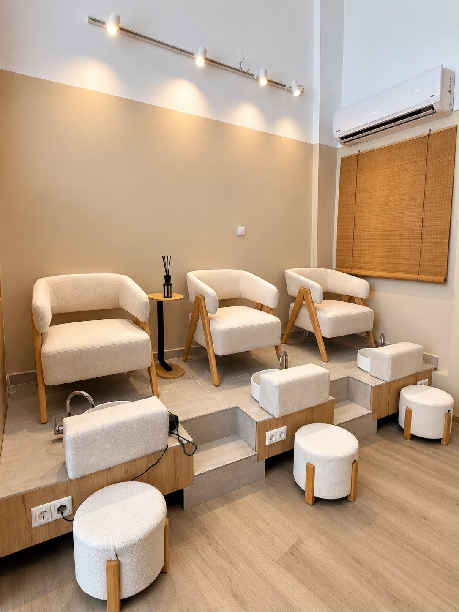
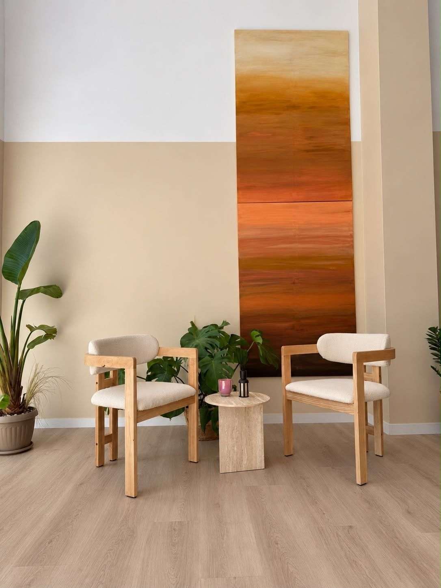
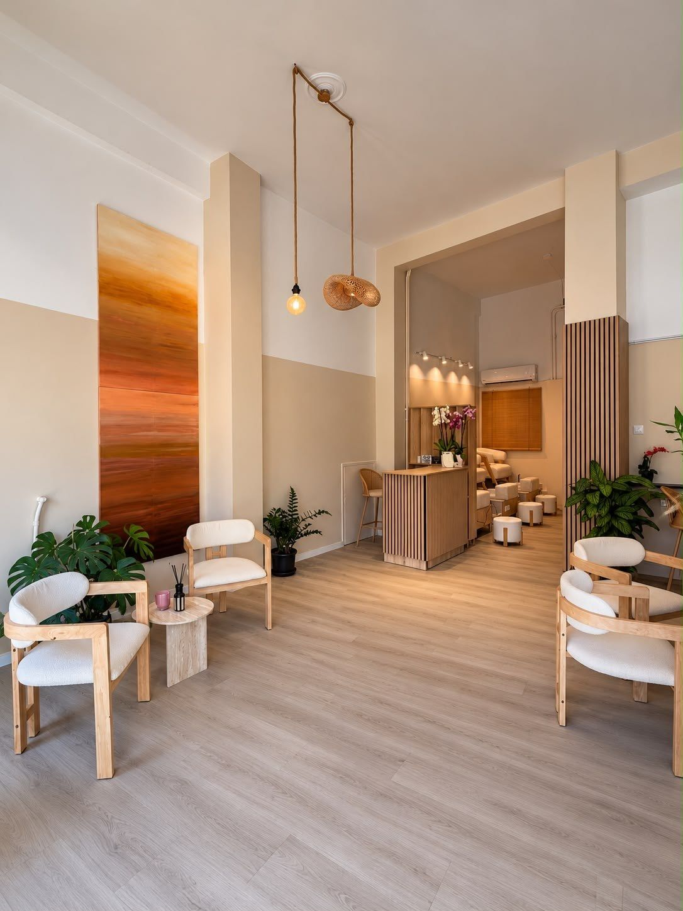
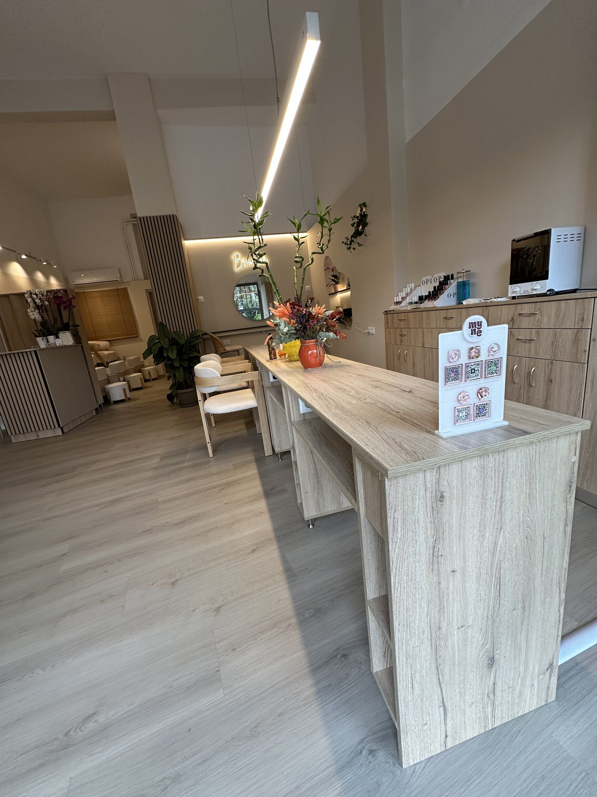

Δες το MYNE από κοντά
Πραγματικές φωτογραφίες από τον χώρο και τη δουλειά μας. Χωρίς φίλτρα, χωρίς επεξεργασία που αλλάζει το αποτέλεσμα.
Χώρος









Νύχια, Φρύδια, Βλεφαρίδες, Πριν & μετά
Εκκρεμεί: φωτογραφίες αποτελεσμάτων με συγκατάθεση πελατισσών. Οι καρτέλες προστίθενται όταν υπάρξει υλικό.
Θέλεις να το δεις από κοντά;
Νύχια · Φρύδια · Βλεφαρίδες